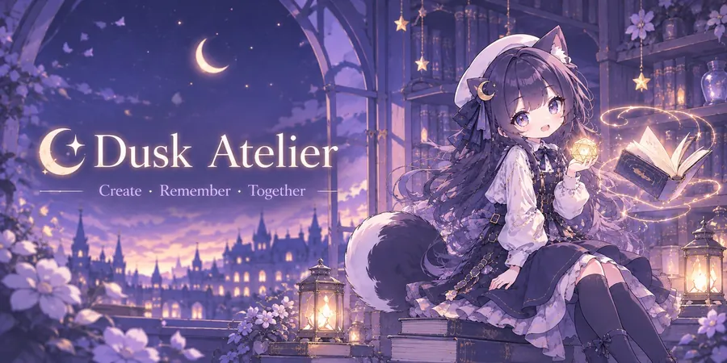
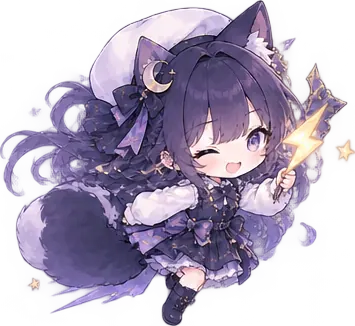
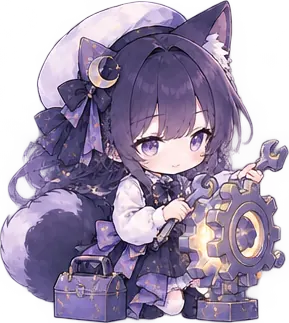
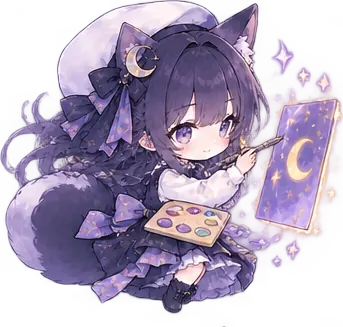
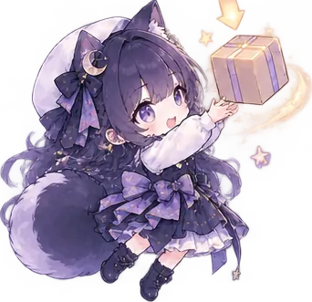

RisuAI에서 모듈·봇을 관리하고, 인물을 기억하는 플러그인 Dusk Atelier 안내서예요.
처음 사용자 가이드설치 → 열기 → 시작 안내. 체크리스트를 따라 하면 끝나요.시작하기 → 장기 기억관계·호칭·추억
장기 기억관계·호칭·추억 이야기 도우미주사위 체험
이야기 도우미주사위 체험 자주 묻는 질문막혔을 때
자주 묻는 질문막혔을 때
장기 기억관계·호칭·추억이야기 도우미주사위 체험
코코아 · 스킬단계별 지침
이미지 태그자동 교정
화면 · 꾸미기테마 · 강조 색 · 내 테마
모듈 · 봇 관리폴더 · 백업 · 되돌리기기능 스위치기본값 · AI 호출자주 묻는 질문막혔을 때